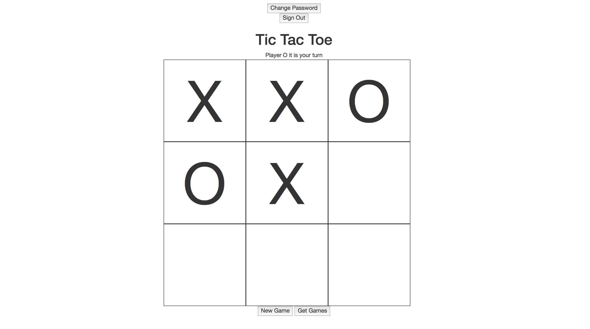
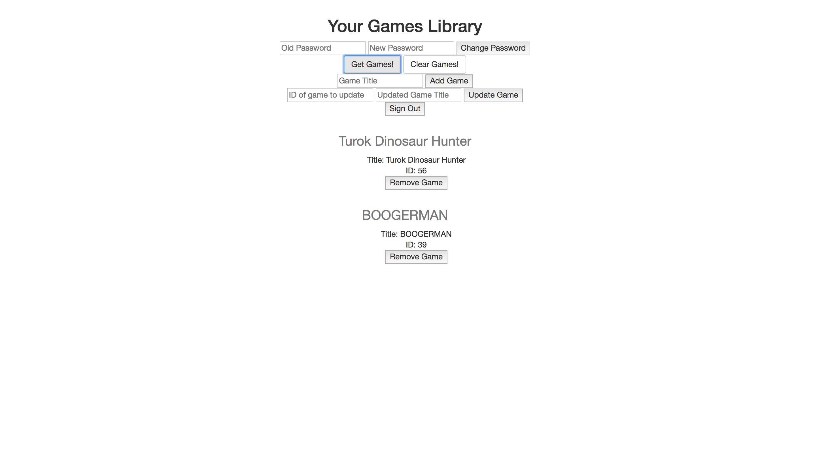

Portfolio
Recent Projects
View GitHub Repo
Tic Tac Toe
A tic tac toe game coded in JavaScript, which allows registered/signed-in users to play local games of tic tac toe against an opponent and tracks the amount of games played.

View Backend API GitHub Repo
View Client GitHub Repo
Your Games Library
The Games Library app is a full-stack app built in JavaScript and Ruby on Rails. It is designed to allow users to input games they own into a database, allowing centralized storage for your games owned. So if you're considering buying something but can't remember if you own it already, you can check the app find out.
